Guía completa del panel: agenda diaria, semanal y mensual, citas y series, cobros y tickets, reembolsos, clientes, anulaciones, cierres, avisos por email y WhatsApp, y configuración del negocio.
El panel de administración es donde se lleva el día a día de la peluquería: la agenda, los cobros, los clientes y la configuración. Solo lo ven las cuentas de tipo Administrador.
Entrar
Abre la app y pulsa Entrar.
Escribe el email y la contraseña de tu cuenta de administrador.
Entrarás directamente en el panel, en la sección Resumen.
Cambia la contraseña inicial. La cuenta de administrador que se crea al instalar la app tiene una contraseña provisional. Cámbiala la primera vez en Mi perfil (pulsando tu nombre arriba a la derecha).
Los administradores no reservan citas para sí mismos: por eso no ven Reservar ni Mis citas. Las citas de los clientes se crean desde la Agenda. En Mi perfil se indica el tipo de cuenta (Administrador) y puedes cambiar tu foto, tus datos, tu contraseña y el tema claro u oscuro.
Secciones
Las pestañas de la parte superior del panel dan acceso a cada sección:
Pestaña
Para qué sirve
Resumen
Cifras del día y del mes y estado de las integraciones (email, WhatsApp, pagos).
Agenda
Ver las citas en lista, por semana o por mes. Crear, mover, cobrar, emitir tickets, reembolsar y cancelar.
Usuarios
Alta, edición, bloqueo, baja y reactivación de clientes y administradores. Ficha con el historial de cada cliente.
Anulaciones
Histórico por cliente de citas anuladas y ausencias.
Cierres
Vacaciones, festivos o ausencias: bloquean las reservas en esas fechas.
Avisos email
Enviar emails a todos los clientes, a los que tienen cita un día o a clientes elegidos.
WhatsApp
Preparar mensajes de WhatsApp a los clientes con el texto ya escrito.
Configuración
Duración de las citas, horario, formas de pago, datos de la peluquería, tickets, servicios y precios.
Reglas básicas que conviene conocer
Las citas duran 30 minutos y el horario es de 9:00 a 13:00 y de 16:00 a 20:00, de lunes a viernes (sábado y domingo, cerrado). Ambas cosas se cambian en Configuración.
Los clientes pueden reservar hasta 1 año vista y cambiar o anular hasta 1 hora antes. El administrador puede hacerlo en cualquier momento.
Las citas se pagan online con PayPal al reservar o en el local (efectivo). Las que crea el administrador se pagan en el local.
Una cita cobrada con ticket no se cancela: primero se reembolsa (ver capítulo 5).
Las citas nunca se borran: las anuladas se conservan para el historial y las estadísticas.
02Resumen
Es la primera pantalla del panel. Da una foto rápida del negocio.
Figura 2.1 · Resumen del panel
Citas hoy y Citas próximas: confirmadas para hoy y en adelante.
Clientes: clientes con cuenta activa o bloqueada.
Cobrado online este mes y Cobrado en el local este mes: lo cobrado en el mes en curso, ya descontados los reembolsos.
En Estado de integraciones verás si el email, WhatsApp y cada forma de pago están listos. Un punto verde indica que funciona; naranja, que está en modo prueba; azul, que funciona en modo básico.
Si el email aparece «en modo prueba», los emails no llegan a los clientes: falta configurar el servidor de correo (SMTP). Es una tarea técnica que se hace una sola vez en el servidor.
03Agenda
La Agenda es la pantalla principal del día a día. Tiene tres vistas: Lista, Semana y Mes. La app recuerda la última vista que usaste.
Figura 3.1 · Barra de la agenda: vistas, navegación y filtro de estado
Lista / Semana / Mes: cambia la forma de ver las citas.
‹ › y Hoy (en Semana y Mes): pasa a la semana o el mes anterior o siguiente, o vuelve al actual.
Estado: muestra solo las citas en un estado (Confirmada, Realizada, Cancelada, No se presentó, Pendiente de pago). En Semana y Mes las canceladas no se muestran, salvo que elijas «Cancelada» en este filtro.
Nueva cita: crea una cita para un cliente (ver capítulo 4).
Vista Lista
Muestra las citas agrupadas por día, con todas sus opciones. Usa los botones Hoy, Mañana y 7 días, o elige un rango con Desde y Hasta.
Figura 3.2 · Vista Lista con las citas de los próximos 7 días
Vista Semana
Una columna por día (de lunes a domingo) y una fila por franja horaria. Cada cita aparece en su hueco con el nombre del cliente y el servicio.
El punto de la esquina indica el pago: pagada, pendiente de cobro.
Las citas ya realizadas aparecen en gris; las pendientes de pago online, con el borde discontinuo.
Los días y horas en que la peluquería está cerrada aparecen rayados. La línea doble separa la mañana de la tarde.
El día de hoy aparece resaltado en la cabecera, con el número de citas de cada día.
Figura 3.3 · Vista Semana
Pulsa una cita para abrir una ventana con todos sus datos y botones (cambiar hora, cobrar, ticket, reembolsar, cancelar, WhatsApp).
Figura 3.4 · Ventana de una cita abierta desde la vista Semana
En el móvil la semana no cabe en la pantalla: desliza la tabla hacia los lados. La columna de las horas se queda fija.
Vista Mes
Un calendario del mes completo. Cada día indica cuántas citas tiene y las primeras con su hora. El número en un círculo naranja, arriba a la derecha, indica cuántas citas de ese día están pendientes de cobro.
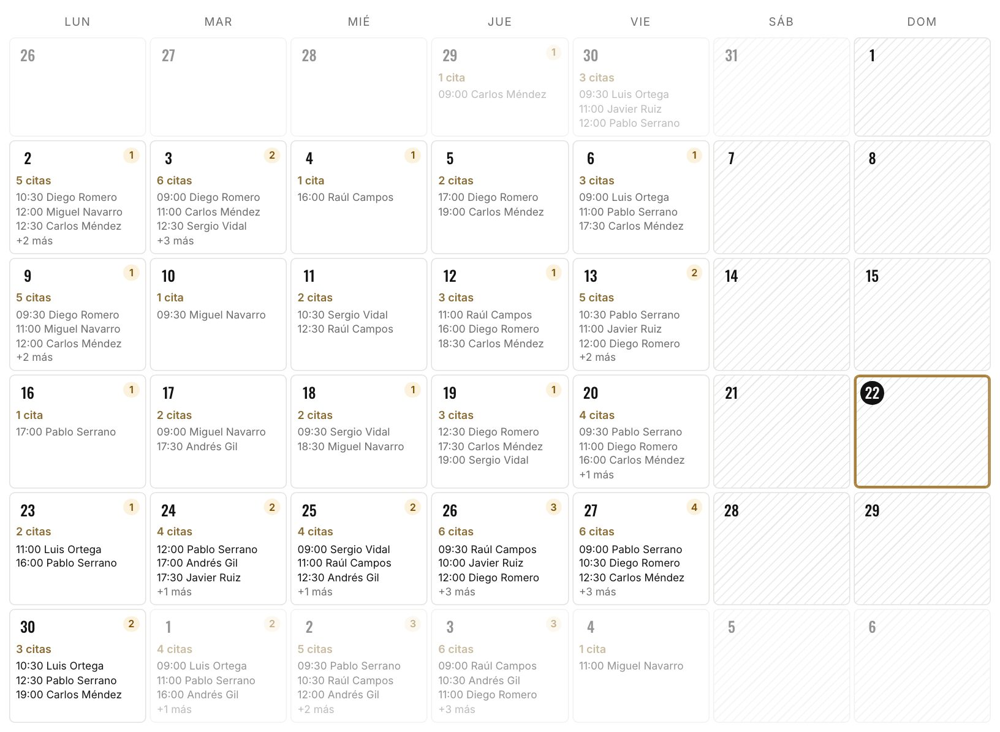
Figura 3.5 · Vista Mes
Pulsa un día para ver debajo todas sus citas con sus botones, igual que en la vista Lista.
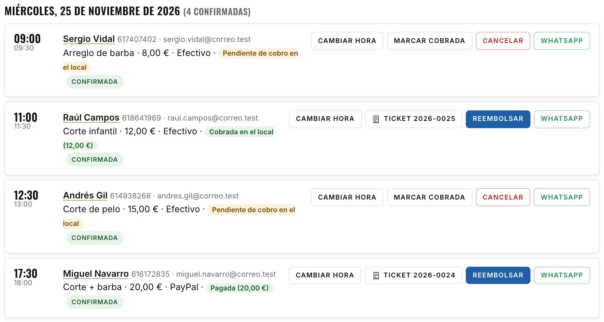
Figura 3.6 · Citas del día elegido en la vista Mes
La tarjeta de una cita
Cada cita muestra la hora, el cliente (su nombre es un enlace a su ficha), su teléfono y email, el servicio, el precio, la forma de pago, el estado del pago y el estado de la cita. Los botones cambian según la situación:
Situación
Botones principales
Pendiente de cobro en el local
Cambiar horaMarcar cobradaCancelar
Cobrada en efectivo, sin ticket
Deshacer cobro▤ Generar ticketCancelar
Cobrada con ticket (efectivo o PayPal)
▤ Ticket 2026-…Reembolsar (sin Cancelar)
Ya pasada y confirmada
RealizadaNo vino
Siempre
WhatsApp (si el cliente tiene teléfono)
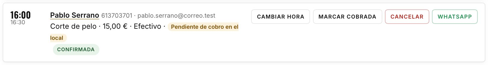
Figura 3.7 · Pendiente de cobroFigura 3.8 · Cobrada en efectivo con ticket
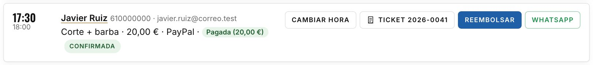
Figura 3.9 · Pagada con PayPal: ticket y botón azul Reembolsar en lugar de Cancelar
04Gestionar citas
Crear una cita para un cliente
En la Agenda, pulsa Nueva cita.
Escribe el nombre, email o teléfono del cliente en Buscar cliente y pulsa su nombre en la lista. Si no existe, créalo antes en Usuarios (capítulo 6).
Elige el servicio.
Elige el día con las flechas o el calendario y pulsa una hora libre.
Si quieres, escribe una nota interna (aparece en la tarjeta de la cita en la Agenda).
Pulsa Crear cita. El cliente recibe un email de confirmación.
Figura 4.1 · Buscar al clienteFigura 4.2 · Elegir servicio y hora
Horas ocupadas. Al elegir la hora, el administrador ve las horas ocupadas en gris con el nombre del cliente que las tiene. Pulsando el nombre se abre su ficha. Los clientes nunca ven quién ocupa una hora.
Las citas creadas desde el panel se pagan en el local. El pago online solo lo puede hacer el propio cliente desde su cuenta.
Citas periódicas para un cliente
En Nueva cita, tras elegir la primera hora, marca Repetir periódicamente.
Elige cada cuánto (1 semana, 2 semanas, 15 días, 3 semanas, 4 semanas, 30 días u Otro…) y hasta cuándo (una fecha o un número de citas).
Revisa la lista: las fechas que caen en día cerrado u ocupado se mueven al hueco libre más cercano. Puedes cambiar o quitar cualquiera.
Pulsa Crear N citas. Se crean todas o ninguna.
Las citas de una serie llevan el distintivo «cada N días». Al cancelar una, puedes cancelar también las siguientes de la serie.
Cambiar la hora
Pulsa Cambiar hora en la cita.
Elige el nuevo día y la nueva hora.
Pulsa Guardar. El cliente recibe un email con la nueva hora. El pago y el ticket se mantienen.
Figura 4.3 · Cambiar la hora
El administrador puede mover una cita en cualquier momento, aunque falte menos de una hora.
Marcar como realizada o como «no vino»
Cuando ha pasado la hora de una cita confirmada, aparecen los botones Realizada y No vino. Márcala para llevar el control: las ausencias cuentan en el apartado Anulaciones y en la ficha del cliente.
Cancelar una cita
Pulsa Cancelar en la cita.
Escribe el motivo (se incluye en el email al cliente).
Si la cita estaba pagada online sin ticket, marca Reembolsar para devolver el importe.
Deja marcado Avisar al cliente por email si quieres que se le notifique.
Si la cita es de una serie, puedes marcar Cancelar también las siguientes citas de esta serie.
Pulsa Cancelar cita.
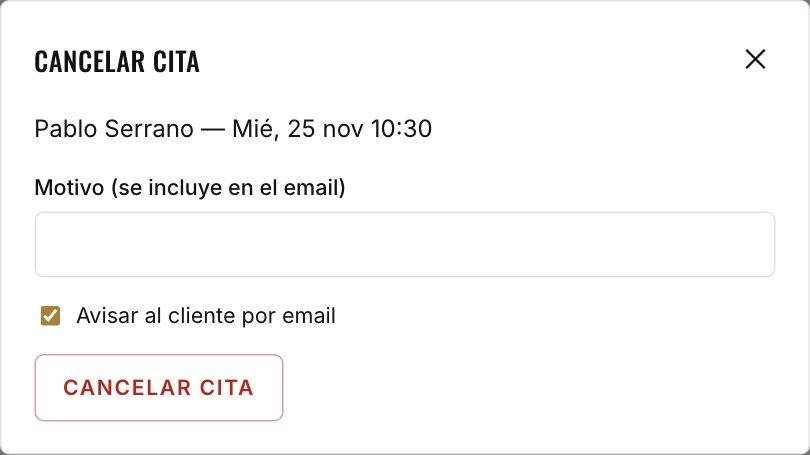
Figura 4.4 · Cancelar una cita
Las citas cobradas con ticket no tienen botón Cancelar. Primero hay que reembolsar el cobro con el botón azul Reembolsar (capítulo 5). En efectivo, después del reembolso la cita vuelve a estar pendiente de cobro y ya se puede cancelar.
Escribir al cliente por WhatsApp
El botón WhatsApp de cada cita abre una conversación con el cliente con un mensaje ya escrito sobre su cita. Solo tienes que revisarlo y enviarlo.
05Cobros, tickets y reembolsos
Cada cobro puede tener su ticket de compra. Los tickets tienen una numeración única y consecutiva, común a los pagos online y a los del local.
Cómo funcionan los tickets
Numeración: año-número de 4 cifras, por ejemplo 2026-0001, 2026-0002… Empieza en 0001 cada año y es la misma serie para PayPal y efectivo.
Pagos online: el ticket se genera solo al completar el pago. Una serie pagada de una vez lleva un único ticket con todas sus citas.
Pagos en el local: lo generas tú al cobrar, o más tarde.
Datos fiscales: el ticket muestra el nombre o razón social, el NIF, la dirección, el desglose de IVA y el texto al pie que pongas en Configuración → Tickets de compra.
Archivo: los PDF se guardan en el servidor, en carpetas por año y mes. Cliente y administrador pueden verlos y descargarlos desde la app.
Cobrar una cita en efectivo
En la cita, pulsa Marcar cobrada.
La ventana muestra el cliente, el servicio y el importe.
Deja marcada la casilla Generar ticket de compra (viene marcada) o desmárcala si no quieres ticket ahora.
Pulsa Cobrar y generar ticket (o Marcar como cobrada).
Figura 5.1 · Cobrar en el local con ticket
La cita pasa a Cobrada en el local y, si generaste ticket, aparece su botón ▤ Ticket 2026-…. El cliente también lo verá en sus citas.
¿Te has equivocado? Si la cobraste sin ticket, tienes el botón Deshacer cobro. Si ya tiene ticket, el cobro no se puede deshacer (para no romper la numeración): usa Reembolsar.
Generar el ticket más tarde
Si una cita está cobrada pero no tiene ticket, aparece el botón ▤ Generar ticket. Al pulsarlo se emite con el siguiente número disponible. También sirve para pagos online cuyo ticket no se hubiera podido generar.
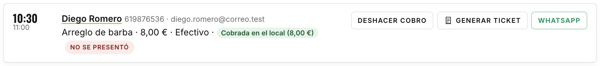
Figura 5.2 · Cita cobrada sin ticket, con el botón Generar ticket
Ver y descargar un ticket
Pulsa el botón ▤ Ticket 2026-… de la cita (en la Agenda o en la ficha del cliente).
Se abre la vista previa del ticket.
Pulsa Descargar PDF para guardarlo o imprimirlo.
Figura 5.3 · Vista previa del ticket
Reembolsar un cobro en efectivo
En una cita cobrada en efectivo con ticket, el botón Cancelar se sustituye por Reembolsar.
Pulsa Reembolsar.
La app pregunta: «¿Seguro que quieres reembolsar X € a …?».
Devuelve el dinero en mano al cliente y pulsa Sí, reembolsar.
La cita queda como no cobrada y pendiente de cobro («Pendiente de cobro en el local · reembolsados X €»). A partir de ahí vuelven a aparecer Marcar cobrada y Cancelar, para que el cliente o tú podáis anularla, o volver a cobrarla con un ticket nuevo. El ticket original se conserva marcado como reembolsado.
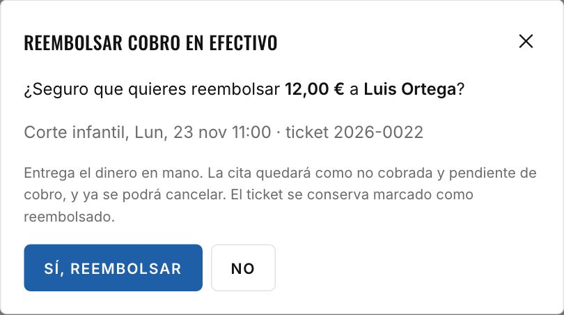
Figura 5.4 · Confirmar el reembolso en efectivo
Reembolsar un pago de PayPal
Pulsa Reembolsar en la cita pagada con PayPal.
Revisa los datos del pago: importe y fecha, cuenta de PayPal del cliente, identificador de la transacción, pedido y ticket.
Indica el importe a devolver: por defecto, todo; puedes poner menos para un reembolso parcial.
Elige qué pasa después del reembolso:
Anular la cita y liberar la hora (solo con reembolso completo).
Mantener la cita, pendiente de cobro en el local: el cliente sigue teniendo su cita y la pagará en la peluquería.
Escribe, si quieres, una nota para el cliente y decide si avisarle por email.
Pulsa Reembolsar X € y anular (o Reembolsar X €).
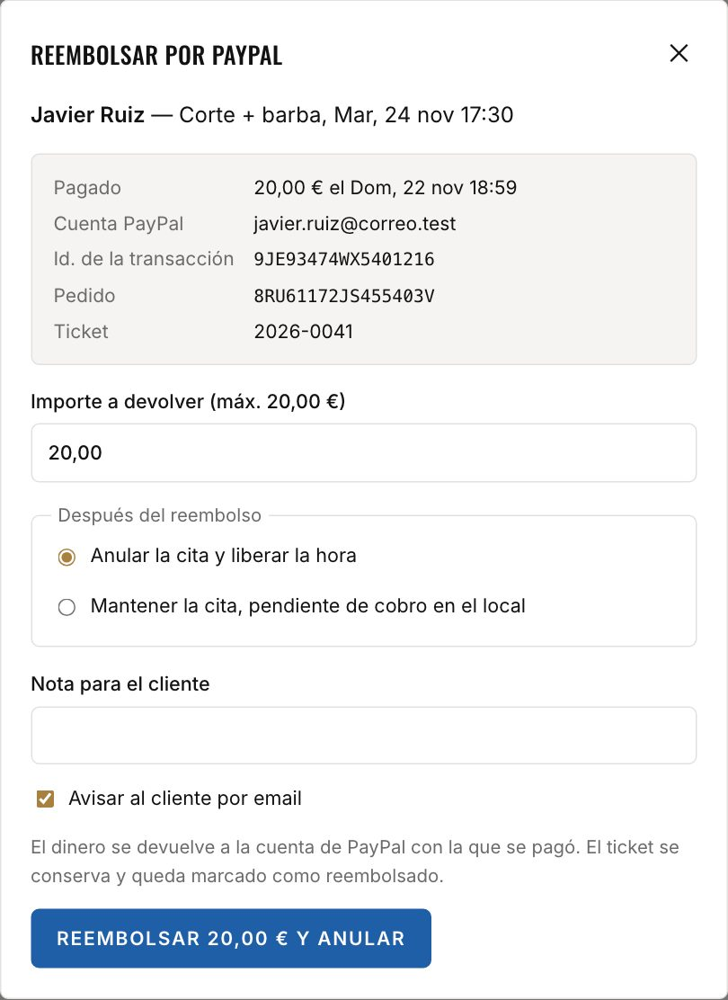
Figura 5.5 · Reembolso de un pago de PayPal
El reembolso de PayPal se hace automáticamente desde la app, sin entrar en PayPal, y el dinero vuelve a la misma cuenta o tarjeta con la que pagó el cliente. Por eso la app guarda los datos de cada pago de PayPal.
Plazo para el cliente. El cliente puede reembolsar y anular él mismo una cita pagada con PayPal hasta 1 hora antes. Con menos tiempo, ni él puede anularla ni reembolsarla: queda en manos del administrador, que puede hacerlo en cualquier momento desde aquí.
06Usuarios
Aquí se gestionan las cuentas de clientes y administradores.
Figura 6.1 · Lista de usuarios
Lista y filtros
Buscar: por nombre, email o teléfono.
Tipo: clientes (usuarios normales) o administradores.
Estado: activos, bloqueados o de baja.
En cada fila tienes Ver citas (abre la ficha del cliente), Editar, Bloquear o Desbloquear, y Baja o Reactivar.
Dar de alta un usuario
Pulsa Alta de usuario.
Elige el tipo: Usuario normal (reserva y gestiona sus citas) o Administrador (acceso completo al panel; no reserva citas propias).
Si quieres, añade una foto.
Escribe nombre, email, teléfono y una contraseña inicial (mínimo 8 caracteres). Comunícasela al usuario para que la cambie en su perfil.
Marca o no Acepta avisos por email.
Pulsa Guardar.
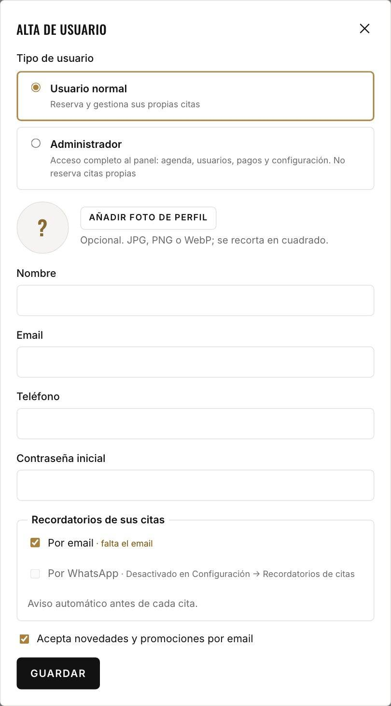
Figura 6.2 · Alta de usuario
Editar
Con Editar puedes cambiar los datos de una cuenta, su tipo, su foto o ponerle una contraseña nueva (por ejemplo, si un cliente la ha olvidado). No puedes quitarte a ti mismo el rol de administrador.
Bloquear y desbloquear
Pulsa Bloquear en el usuario.
Indica hasta qué fecha (déjalo vacío para un bloqueo indefinido) y el motivo.
Marca Cancelar también sus citas futuras (con reembolso) si quieres anularlas.
Pulsa Bloquear.
Figura 6.3 · Bloquear a un cliente
Un cliente bloqueado no puede reservar ni modificar citas hasta la fecha indicada (después se desbloquea solo). Para levantar el bloqueo antes, pulsa Desbloquear.
Baja y reactivación
Baja desactiva la cuenta y cancela sus citas futuras (con reembolso de las pagadas online). El historial de citas y pagos se conserva. Para recuperar la cuenta, filtra por De baja y pulsa Reactivar.
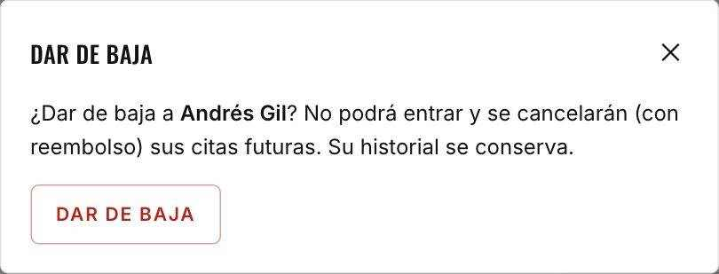
Figura 6.4 · Confirmar la baja
Al bloquear con cancelación, dar de baja o crear un cierre, las citas cobradas en efectivo con ticket no se cancelan automáticamente: la app te avisa de cuántas quedan para que las reembolses y canceles a mano.
Ficha del cliente
Pulsa Ver citas en la lista, o el nombre del cliente en cualquier cita, para abrir su ficha:
Cabecera: foto, nombre, email, teléfono, tipo y estado, y botón de WhatsApp.
Cifras: citas próximas, pasadas, canceladas, ausencias («No vino»), total pagado y pendiente de cobro.
Citas: todas, con filtros Todas, Próximas, Pasadas y Anuladas y no vino. Las próximas aparecen en azul y las pasadas en gris. Cada una indica si está pagada y con qué método.
Desde cada cita puedes cobrar, generar o ver el ticket y reembolsar, igual que en la Agenda.
Figura 6.5 · Ficha de un cliente
07Anulaciones y ausencias
Histórico por cliente de las citas anuladas y de las ausencias. Ayuda a detectar a quién conviene recordar las citas o, llegado el caso, bloquear.
Abre la pestaña Anulaciones.
Elige el periodo: Este año, Últimos 12 meses, Todo o Fechas (desde / hasta).
Pulsa el título de una columna para ordenar por ella.
Pulsa Ver citas o el nombre del cliente para abrir su ficha con el filtro Anuladas y no vino ya aplicado.
Figura 7.1 · Anulaciones y ausencias por cliente
Columna
Qué cuenta
No vino
Citas marcadas como «No vino» (en rojo si hay alguna).
Anuló él
Citas que anuló el propio cliente.
Anuló la peluquería
Citas que anuló el administrador (cierres, bloqueos, imprevistos…).
% de sus citas
Ausencias + anulaciones del cliente sobre el total de sus citas del periodo.
Última
Fecha de la última incidencia.
Arriba se muestran los totales del periodo. No se cuentan los pagos online que el cliente no llegó a completar. Como las citas nunca se borran, el histórico se conserva aunque el cliente se dé de baja.
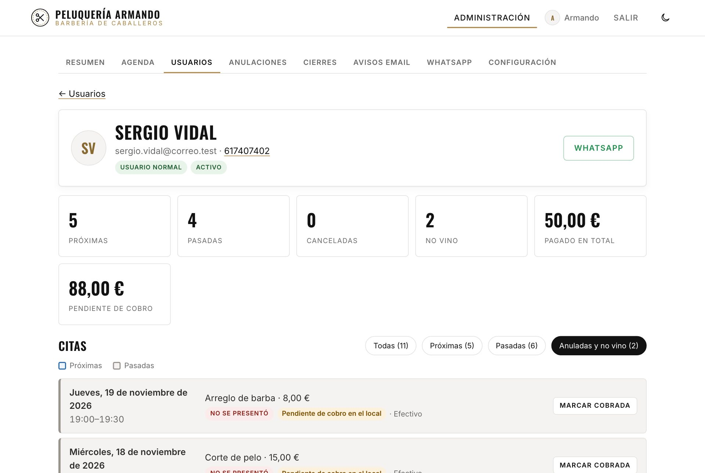
Figura 7.2 · Ficha del cliente con el filtro «Anuladas y no vino»
08Cierres temporales
Vacaciones, festivos, formación o cualquier ausencia. Durante un cierre los clientes no pueden reservar.
Abre la pestaña Cierres.
Elige Desde y Hasta. Para cerrar solo unas horas, rellena también las horas (opcional); sin horas, se cierran los días completos.
Escribe el motivo (por ejemplo, «Vacaciones de verano»).
Si ya hay citas en esas fechas, decide si marcar Cancelar las citas existentes en ese periodo, reembolsar y avisar por email.
Pulsa Crear cierre.
Figura 8.1 · Cierres temporales
Si no marcas la cancelación y hay citas en el periodo, la app te avisa de cuántas siguen activas para que las revises en la Agenda.
Los cierres programados aparecen debajo. Pulsa Eliminar para quitar uno: las fechas vuelven a estar disponibles.
En la Agenda, los días y horas cerrados aparecen rayados.
Después de crear un cierre, usa Avisos email con la plantilla «Cierre por vacaciones» para avisar a todos los clientes.
09Avisos por email
Envía un email a muchos clientes a la vez: cierres, cambios de horario, promociones o recordatorios.
Abre la pestaña Avisos email.
Elige los destinatarios:
Todos los clientes que aceptan emails.
Clientes con cita el día… (elige la fecha): útil para avisar de un retraso o un cambio.
Elegir clientes: marca uno a uno los que quieras.
Pulsa una plantilla (Cierre por vacaciones, Recordatorio, Promoción) para empezar con un texto ya escrito, o escribe el tuyo.
Escribe el asunto y el mensaje. Pon {nombre} donde quieras que aparezca el nombre de cada cliente.
Pulsa Enviar a N cliente(s).
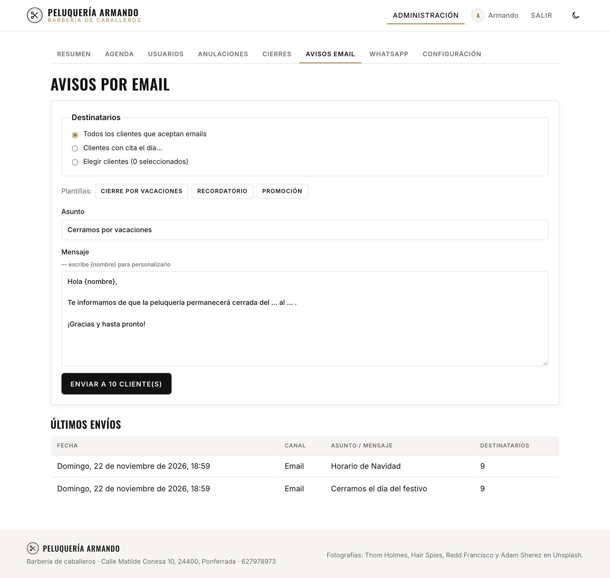
Figura 9.1 · Avisos por email y últimos envíos
En Últimos envíos queda el registro de cada envío con la fecha, el asunto y el número de destinatarios.
Los clientes que han desmarcado «Recibir avisos por email» no reciben estos envíos generales. Los emails de sus propias citas (confirmación, cambios y anulaciones) sí los reciben siempre.
10WhatsApp
Prepara un mensaje de WhatsApp para varios clientes. La app genera un enlace por cliente con el texto ya escrito; al pulsarlo se abre WhatsApp (en el móvil, en el ordenador o en WhatsApp Web) y solo tienes que enviarlo.
Abre la pestaña WhatsApp.
Elige los destinatarios: todos los clientes, los que tienen cita un día o clientes elegidos.
Escribe el mensaje. {nombre} se sustituye por el nombre de cada cliente.
Pulsa Preparar enlaces.
En la lista, pulsa Abrir chat en cada cliente y envía el mensaje desde WhatsApp.
Figura 10.1 · Mensajes de WhatsApp preparados
Envío automático (opcional). Si se configura la API de WhatsApp Business en el servidor, aparece también el botón Enviar automáticamente (API), que envía los mensajes sin abrir cada chat. WhatsApp solo permite mensajes libres a clientes que te hayan escrito en las últimas 24 horas; fuera de ese plazo exige plantillas aprobadas por Meta.
Recuerda que cada cita de la Agenda y cada ficha de cliente tienen también su propio botón WhatsApp.
11Configuración
Aquí se ajusta cómo funciona el negocio. Después de cambiar algo, pulsa Guardar configuración, abajo de la pantalla. Las citas ya reservadas no se modifican.
Citas
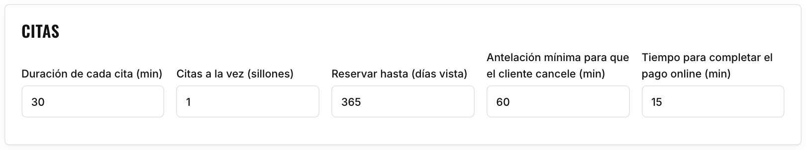
Figura 11.1 · Ajustes de las citas
Duración de cada cita: 30 minutos por defecto. Define los huecos de la agenda.
Citas a la vez (sillones): cuántos clientes se pueden atender a la misma hora.
Reservar hasta (días vista): 365 por defecto.
Antelación mínima para que el cliente cancele: 60 minutos por defecto.
Tiempo para completar el pago online: cuánto se guarda la hora mientras el cliente paga.
Citas periódicas
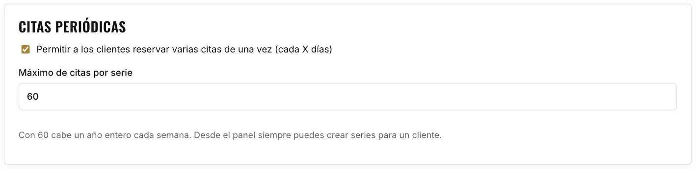
Figura 11.2 · Citas periódicas
Activa o desactiva que los clientes puedan reservar varias citas de una vez y el máximo de citas por serie (60 por defecto). Desde el panel siempre puedes crear series para un cliente.
Horario semanal
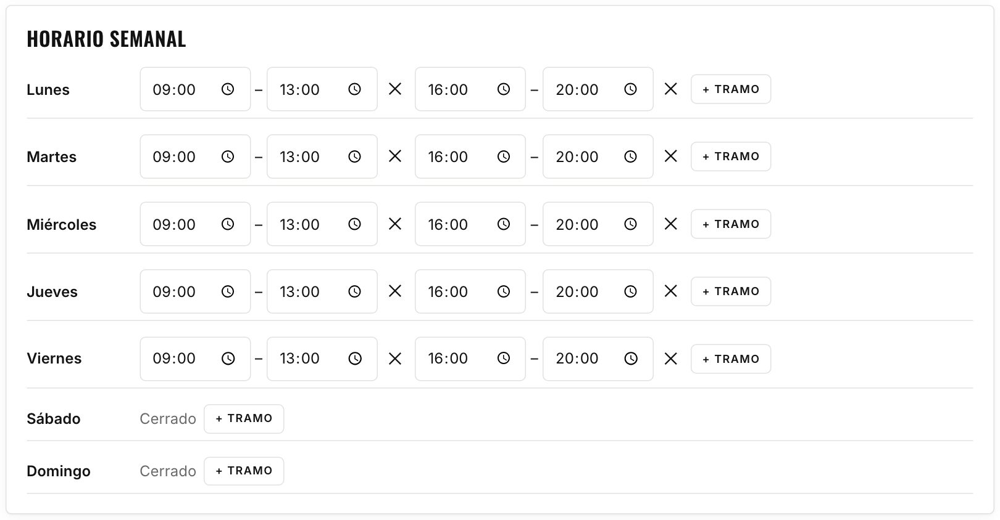
Figura 11.3 · Horario semanal por tramos
Cada día tiene uno o varios tramos (por ejemplo, 09:00–13:00 y 16:00–20:00). Cambia las horas directamente.
+ tramo añade un tramo; ✕ lo quita. Un día sin tramos queda Cerrado.
Formas de pago
Figura 11.4 · Formas de pago
Activa o desactiva el pago en el local y PayPal. Si una forma de pago aparece con «faltan credenciales en el servidor», no se ofrecerá a los clientes hasta que se configure.
Datos de la peluquería
Figura 11.5 · Datos de la peluquería
Nombre, teléfono, email y dirección. Aparecen en la web, en los emails y en los tickets.
Tickets de compra
Figura 11.6 · Datos de los tickets
Razón social (si es distinta del nombre comercial) y NIF/CIF.
IVA incluido en los precios (%): 21 por defecto. El ticket desglosa la base imponible y el IVA. Pon 0 para no desglosarlo.
Texto al pie: por ejemplo, «Gracias por su visita».
Rellena el NIF y la razón social antes de entregar tickets a los clientes. Los cambios afectan a los tickets que se emitan a partir de ese momento.
Servicios y precios
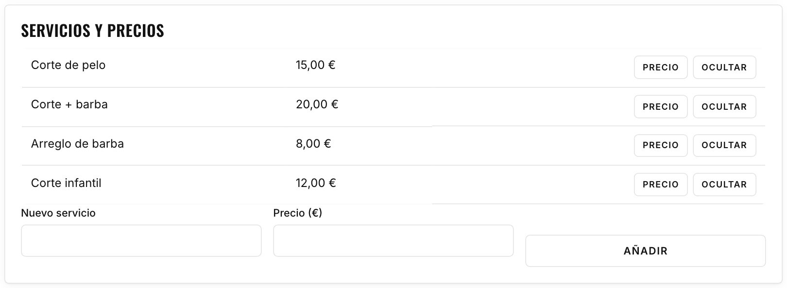
Figura 11.7 · Servicios y precios
Precio: cambia el precio de un servicio. Las citas ya reservadas mantienen el precio con el que se reservaron.
Ocultar / Activar: un servicio oculto deja de ofrecerse, pero se conserva en el historial.
Para añadir un servicio, escribe su nombre y precio abajo y pulsa Añadir.
Los servicios se guardan al momento; no hace falta pulsar «Guardar configuración».
12Resumen de reglas y preguntas frecuentes
Reglas de un vistazo
Tema
Regla
Antelación del cliente
Reserva hasta 1 año vista. Cambia o anula hasta 1 hora antes. El administrador, siempre.
Pago online
Queda pagada y con ticket al momento. El cliente la reembolsa y anula él mismo con al menos 1 hora de antelación.
Pago en el local
Se cobra con «Marcar cobrada»; el ticket es opcional en ese momento.
Cobrada con ticket
No se cancela: «Reembolsar» (azul). Efectivo → vuelve a pendiente de cobro. PayPal → anular o mantener.
Deshacer un cobro
Solo si no tiene ticket. Con ticket, se reembolsa.
Numeración de tickets
AAAA-NNNN, consecutiva, común a todas las formas de pago, empieza cada año.
Historial
Las citas y los tickets nunca se borran.
Preguntas frecuentes
Un cliente ha olvidado su contraseña.
En Usuarios, pulsa Editar en su cuenta, escribe una contraseña nueva y comunícasela. Él podrá cambiarla en su perfil.
Un cliente quiere anular una cita que pagó en el local.
Pulsa Reembolsar, devuélvele el dinero en mano y después pulsa Cancelar.
Un cliente llama 20 minutos antes para anular una cita pagada con PayPal.
Él ya no puede hacerlo desde la app. Pulsa Reembolsar, elige el importe (todo o parte, según tu política) y si anulas la cita o la mantienes.
He marcado como cobrada una cita por error.
Si no generaste ticket, pulsa Deshacer cobro. Si ya tiene ticket, usa Reembolsar.
Un cliente no se presenta.
Cuando pase la hora, pulsa No vino. Si se repite, revisa la pestaña Anulaciones y, si lo consideras, bloquéalo temporalmente.
Me voy de vacaciones.
Crea un cierre con las fechas (capítulo 8) y avisa a los clientes con la plantilla de vacaciones de Avisos email.
Quiero cambiar la duración de las citas a 45 minutos.
Configuración → Citas → Duración de cada cita: 45 → Guardar configuración. Las citas ya reservadas se mantienen y las nuevas nunca se solapan con ellas.
¿Dónde están guardados los tickets?
Los PDF se guardan en el servidor, en carpetas por año y mes. Conviene incluir esa carpeta en las copias de seguridad.
Peluquería Armando · Panel de administración
Las capturas usan datos de ejemplo (clientes, sus teléfonos y emails, NIF e importes ficticios). Fotografías de la app: Thom Holmes, Hair Spies, Redd Francisco y Adam Sherez (Unsplash).